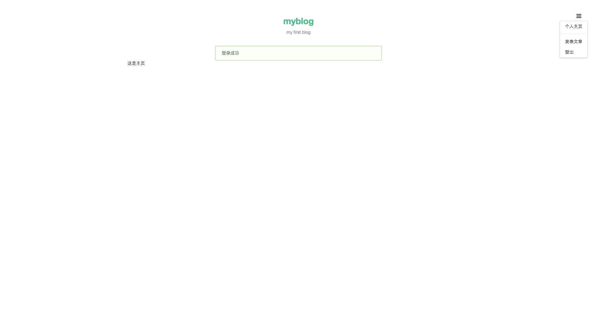

4.8.1 登出
现在我们来完成登出的功能。修改 routes/signout.js 如下：
routes/signout.js
var express = require('express');
var router = express.Router();
var checkLogin = require('../middlewares/check').checkLogin;
// GET /signout 登出
router.get('/', checkLogin, function(req, res, next) {
// 清空 session 中用户信息
req.session.user = null;
req.flash('success', '登出成功');
// 登出成功后跳转到主页
res.redirect('/posts');
});
module.exports = router;
此时点击右上角的 登出，成功后如下图所示：

4.8.2 登录页
现在我们来完成登录页。修改 routes/signin.js 相应代码如下：
routes/signin.js
router.get('/', checkNotLogin, function(req, res, next) {
res.render('signin');
});
新建 views/signin.ejs，添加如下代码：
views/signin.ejs
<%- include('header') %>
<div class="ui grid">
<div class="four wide column"></div>
<div class="eight wide column">
<form class="ui form segment" method="post">
<div class="field required">
<label>用户名</label>
<input placeholder="用户名" type="text" name="name">
</div>
<div class="field required">
<label>密码</label>
<input placeholder="密码" type="password" name="password">
</div>
<input type="submit" class="ui button fluid" value="登录">
</div>
</form>
</div>
<%- include('footer') %>
现在访问 localhost:3000/signin 试试吧。
4.8.3 登录
现在我们来完成登录的功能。修改 models/users.js 添加 getUserByName 方法用于通过用户名获取用户信息：
models/users.js
var User = require('../lib/mongo').User;
module.exports = {
// 注册一个用户
create: function create(user) {
return User.create(user).exec();
},
// 通过用户名获取用户信息
getUserByName: function getUserByName(name) {
return User
.findOne({ name: name })
.addCreatedAt()
.exec();
}
};
这里我们使用了 addCreatedAt 自定义插件（通过 _id 生成时间戳），修改 lib/mongo.js，添加如下代码：
lib/mongo.js
var moment = require('moment');
var objectIdToTimestamp = require('objectid-to-timestamp');
// 根据 id 生成创建时间 created_at
mongolass.plugin('addCreatedAt', {
afterFind: function (results) {
results.forEach(function (item) {
item.created_at = moment(objectIdToTimestamp(item._id)).format('YYYY-MM-DD HH:mm');
});
return results;
},
afterFindOne: function (result) {
if (result) {
result.created_at = moment(objectIdToTimestamp(result._id)).format('YYYY-MM-DD HH:mm');
}
return result;
}
});
小提示：24 位长的 ObjectId 前 4 个字节是精确到秒的时间戳，所以我们没有额外的存创建时间（如: createdAt）的字段。ObjectId 生成规则：

修改 routes/signin.js 如下：
routes/signin.js
var sha1 = require('sha1');
var express = require('express');
var router = express.Router();
var UserModel = require('../models/users');
var checkNotLogin = require('../middlewares/check').checkNotLogin;
// GET /signin 登录页
router.get('/', checkNotLogin, function(req, res, next) {
res.render('signin');
});
// POST /signin 用户登录
router.post('/', checkNotLogin, function(req, res, next) {
var name = req.fields.name;
var password = req.fields.password;
UserModel.getUserByName(name)
.then(function (user) {
if (!user) {
req.flash('error', '用户不存在');
return res.redirect('back');
}
// 检查密码是否匹配
if (sha1(password) !== user.password) {
req.flash('error', '用户名或密码错误');
return res.redirect('back');
}
req.flash('success', '登录成功');
// 用户信息写入 session
delete user.password;
req.session.user = user;
// 跳转到主页
res.redirect('/posts');
})
.catch(next);
});
module.exports = router;
现在访问 localhost:3000/signin，用刚才注册的账号登录，如下图所示：

上一节：4.7 注册
下一节：4.9 文章